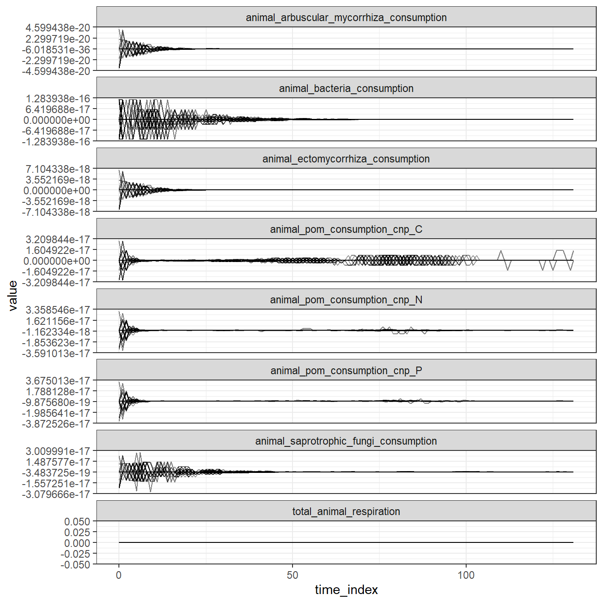

Code
library(tidync)
library(tidyverse)
library(here)
source(here("tools/R/tidy_continuous_data.R"))I am conducting a sensitivity analysis for the soil and litter modules. A sensitivity analysis examines how much of the variation in an output is attributed to variation in an input. However, if an output never varies, it is meaningless to conduct a sensitivity analysis. This happens to a few animal-related outputs in the all_continuous_data.nc file. My gut feeling is that the lack of temporal variation is due to the animal FGs dying off, hence the exploration here.
At the end of this report, I explain why we might want to design a scenario where there is at least some persistent animal populations, at least for the purpose of sensitivity analyses.
I ran the full maliau_2 scenario:
data/scenarios/maliau/maliau_2/configdata/scenarios/maliau/maliau_2/dataI’m thinking of writing a function to automatically summarise key model configurations from the full config TOML compiled by ve_run. We know what maliau_2 means but others outside our team may not remember. Sometimes a scenario config may also change. Tracked in this Issue.
Currently, I’m examining:
animal_arbuscular_mycorrhiza_consumptionanimal_bacteria_consumptionanimal_ectomycorrhiza_consumptionanimal_pom_consumption_cnpanimal_saprotrophic_fungi_consumptiontotal_animal_respirationPardon if I haven’t grasped the full list of “animal-related” continuous state variables. Please suggest anything that is missing here.
library(tidync)
library(tidyverse)
library(here)
source(here("tools/R/tidy_continuous_data.R"))animal_vars <- c(
"animal_arbuscular_mycorrhiza_consumption",
"animal_bacteria_consumption",
"animal_ectomycorrhiza_consumption",
"animal_pom_consumption_cnp",
"animal_saprotrophic_fungi_consumption",
"total_animal_respiration"
)
animal_cont <- tidy_continuous_data(
here("data/scenarios/maliau/maliau_2/out/all_continuous_data.nc"),
variables = animal_vars
)First I saw that the range of these state variables are very small. Are they truly very small, or are they numerical imprecisions that need to be zapped to zero?
animal_cont |>
group_by(variable) |>
summarise(min = min(value), max = max(value))# A tibble: 6 × 3
variable min max
<chr> <dbl> <dbl>
1 animal_arbuscular_mycorrhiza_consumption -4.18e-20 4.18e-20
2 animal_bacteria_consumption -1.17e-16 1.17e-16
3 animal_ectomycorrhiza_consumption -6.46e-18 6.46e-18
4 animal_pom_consumption_cnp -3.53e-17 3.33e-17
5 animal_saprotrophic_fungi_consumption -2.80e-17 2.73e-17
6 total_animal_respiration 0 0 Here’s how the variables looked over simulation time steps:
animal_cont |>
unite("variable2", variable, element, na.rm = TRUE) |>
ggplot() +
facet_wrap(~variable2, ncol = 1, scales = "free_y") +
geom_line(aes(time_index, value, group = cell_id), alpha = 0.5) +
theme_bw()
animal_cohort <- read_csv(
here("data/scenarios/maliau/maliau_2/out/animal_cohort_data.csv")
)
max_cohort_time <- max(animal_cohort$time_index)Before proceeding, I checked the animal cohort data and saw that all cohorts went extinct after time step 3.
A few follow-up questions upon seeing the temporal graphs:
If these trends are numerical artefacts rather than true consumption and respiration rates, then there is not much point to read on.
Mainly so that we can include animal-related state variables into the sensitivity analyses. More importantly, the animal variables feed back into the non-animal variables. Unless we are truly aiming for an empty-forest scenario, we will be left with a half-complete sensitivity analysis.
Should we consider an alternative set of animal FG definitions? Currently maliau_2 uses the level 1 definition, which contain only a single herbivorous endotherm that always go extinct very early on. Has anyone run VE with the level 2 definitions? If the level 2 groups also go extinct, should we consider an alternative set (perhaps more basal in tropic levels) that can persist over time, and hence continue to keep the animal and non-animal components coupled until the end of simulation?